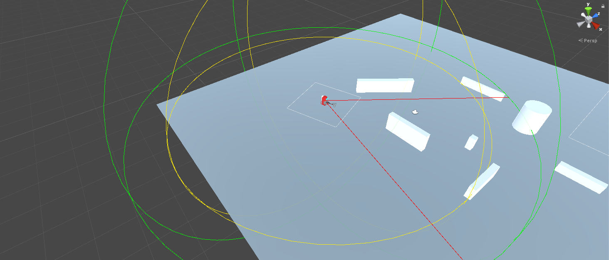
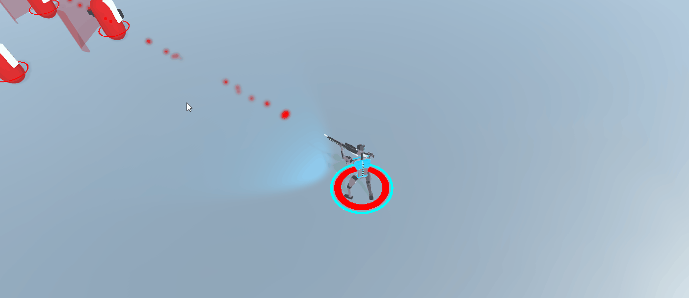
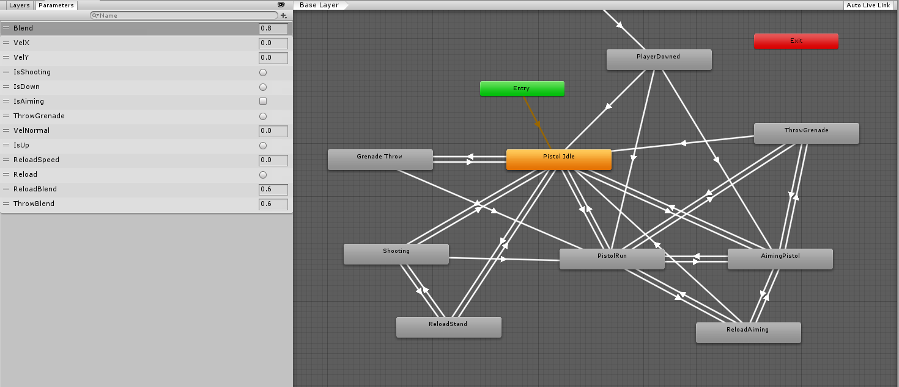
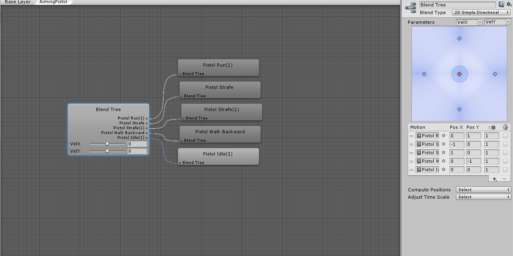
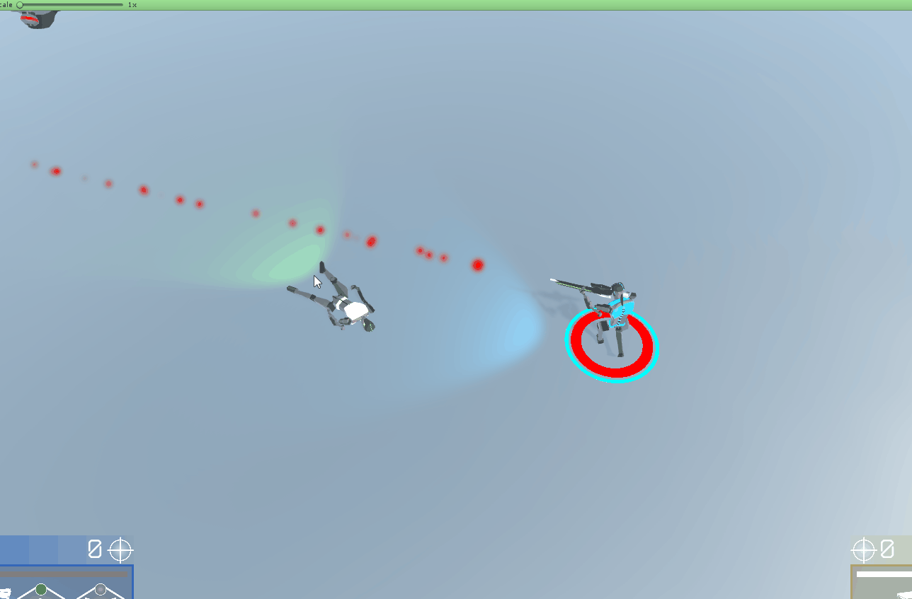
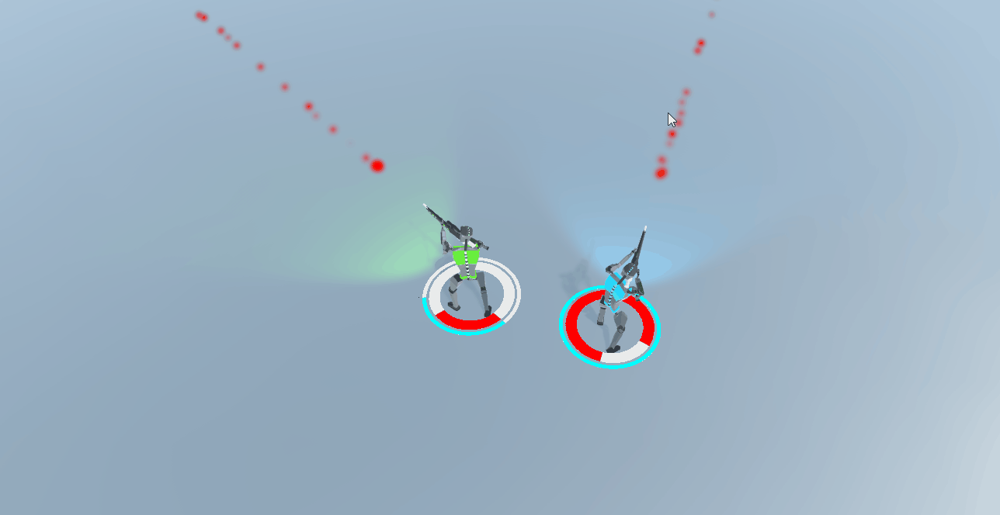
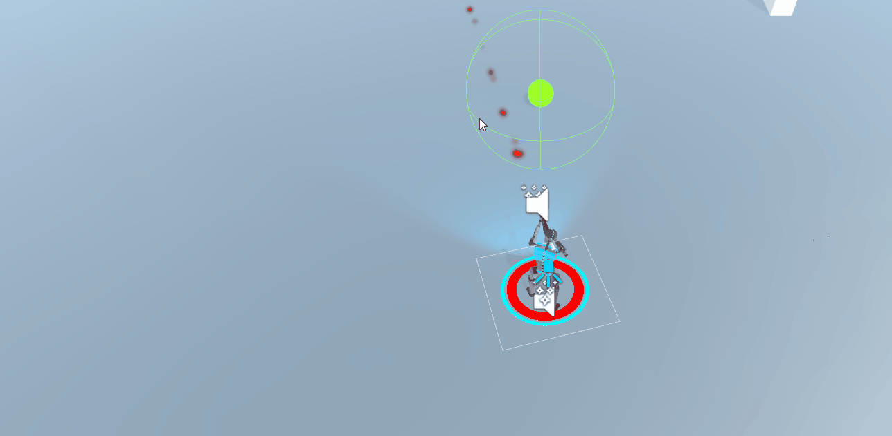

Shock;Gate
Wstrzymany
Typ projektuStudia / zespołowy (3 osoby)
Czas trwania~6 miesięcy
Użyte oprogramowanieUnity Engine, Audacity
Główne roleLead programmer / Level designe / Game design
O Shock;Gate
Shock;Gate jest projektem inżynierskim rozpoczętym pod koniec trzeciego roku w Collegium Da Vinci. Zespół składał się z dwóch programistów oraz jednego grafika 3D. Byłem odpowiedzialny za implementacje wszystkich funkcjonalności gry oraz za tworzenie poziomów w Unity Engine. Jest to mój pierwszy "profesjonalny" projekt w 3D, które pomógł mi rozwinąć moje umiejętności w Unity oraz C#.
W grę można zagrać samodzielnie lub z drugim gracza, można rozegrać 3 różne misje, a ukończenie ostatniej odblokowuje dwie nowe bronie. Dodatkowo jest strzelnia, gdzie można przetestować wszystkie dostępne w grze bronie. W grze można napotkać 6 rodzajów przeciwników.
Rzeczy, które zrobiłem:
-
sterowanie dla dwóch graczy
-
kontrolowanie postaci za pomocą klawiatury lub kontrolera do xboxa
-
implementacja umiejętności postaci, różnych rodzajów broni oraz granatów
-
projektowanie przeciwników oraz programowanie ich AI
-
design mechanik gry
-
animacje z mixamo oraz Blend Tree animacji
-
wybór broni w HUB-ie
-
tworzenie poziomów w Unity
-
tworzenie particlów
-
implementacja oraz edytowanie dzwięków
-
rysowanie wirefremów
-
współpraca z zespołem
-
prowadzenie testów gry
AI przeciwnika
Jak widać na załączonym obrazku przeciwnicy posiadąją dwie sfery, pierwsza zielona pokazuje zasięg widzenia przeciwnika, a druga żółta przedstawia zasięg broni przeciwnika. Dodatkowo przeciwnik ma kąt widzenia, pokazany przez dwie czerwone linie. Gdy gracz wejdzie w zasięg widzenia ten sprawdza najpierw czy jest on w kącie widzenia przeciwnika, a następnie używa raycasta, by sprawdzić czy pomiędzy nim, a graczem nie znajduje się żaden element otoczenia. Następnie jeśli nic nie zasłania gracza przechodzi on w stan "Follow". Przeciwnicy mają cztery stany:
-
Patrol - stoją w miejscu lub patrolują okolice, kolor Boxa na ich plecach jest wtedy zielony.
-
Follow - w momencie zauważenia gracza, zbliżaja się do niego aż nie będzie w zasiegu broni. Kolor wskaznika zmienia się wtedy na żółty.
-
Fight - gdy gracz znajduje się w zasiegu broni, przeciwnik się zatrzymuje i zaczyna strzelać, ewentualnie może rzucić też granatem. Gdy wracz wyjdzie poza zasięg, przechodzi on wtedy w Follow. Kolor wskaznika zmienia się na czerwony.
-
Alarmed - przeciwnik dostał sygnał od swojego kolegi z drużyna i zmierza w miejsce w którym zauważono gracza. Kolor wskaznika pomarańczowy.
Alarm
Na gifie widać jak przeciwnik w momencie dostania obrażeń od gracza, pobiera z pocisku informacje od kogo dostał i bierze go sobie za cel daje, a następnie wchodzi w stan "Follow", a następnie przekazuje jego pozycję reszcie z grupy, dodatkowo wyda on dzwięk, który da graczowi znać, że go zauważyli. Przeciwnicy także nie mogą strzelić do gracza, gdy nie jest w odpowiednim koncie do nich.
Kontroler animacjii dla pistoletu
Na obrazku widać połaczenia między animacjami dla pistoletu. Kontroler gracza posiada dwa Animation Controllery jeden dla pistoletów (broni bocznej), a drugi dla karabinów i reszty (broń główna). Przy zmianie broni przełącza się między tymi dwoma drzewkami. Po lewej widać wszystkie parametry od których uzależnione są przejścia pomiędzy animacjami, takie jak np. jak bardzo mają być połączone ze sobą animacje przeładowania i rzucania granatów w Blend Tree.
Blend Tree dla biegu
Łączę ze sobą pięć animacji dla biegu postaci z pistoletem w Blend Tree. Używam parametru VelX, który odpowiada za oś X na analogu kotrolera lub A/D na klawiaturze, a VelY dla osi Y. Po prawej w motion widać wartości, które podałem by została włączona odpowiednia animacja.
Dash
Jest z jedną z mechanik, która pozwala ci uniknąć pocisków, granatów oraz przeciwników.
Zdalne wysadzenie granatu
Możesz także zdetonować granat szybciej, zamiast czekać aż minie czas do wybuchu.
Wskrzeszanie drugiego gracza
Gdy gracz polegnie podczas gry, można do niego podejść i wskrzecić go, ale trzeba uważać bo zajmuje to trochę czasu.
Leczenie drugiego gracza
Możesz także przekazać drugiemu graczowi, część swojego zdrowia, aby go wyleczyć. Nie możesz przekazać swoje zdrowie, gdy masz mniej niż 50% punktów życia.
Skrzynka z amunicją
Gdy zabraknie ci amunicji możesz podejść do skrzynki, by uzupełnić swoją amunicję.

Dopalacze
Podczas rozgrywki z przeciwników mogą wybaść dopalacze, które np. zwiększą twoją szybkość poruszania się, obrażenia, odnowią granaty lub tarczę. W przypadku gifa gracz uzyskał zwiększone obrażenia.
Poruszanie się motocyklem
W drugiej misji znajdują się dwa motory dla graczy. Motor posiada dwa tryby, pierwszy pozwala motorowi celować i strzelać, ale kosztem prędkości. Drugi tryb zwiększa prędkość, ale jest mniej zwrotny i nie można celować.